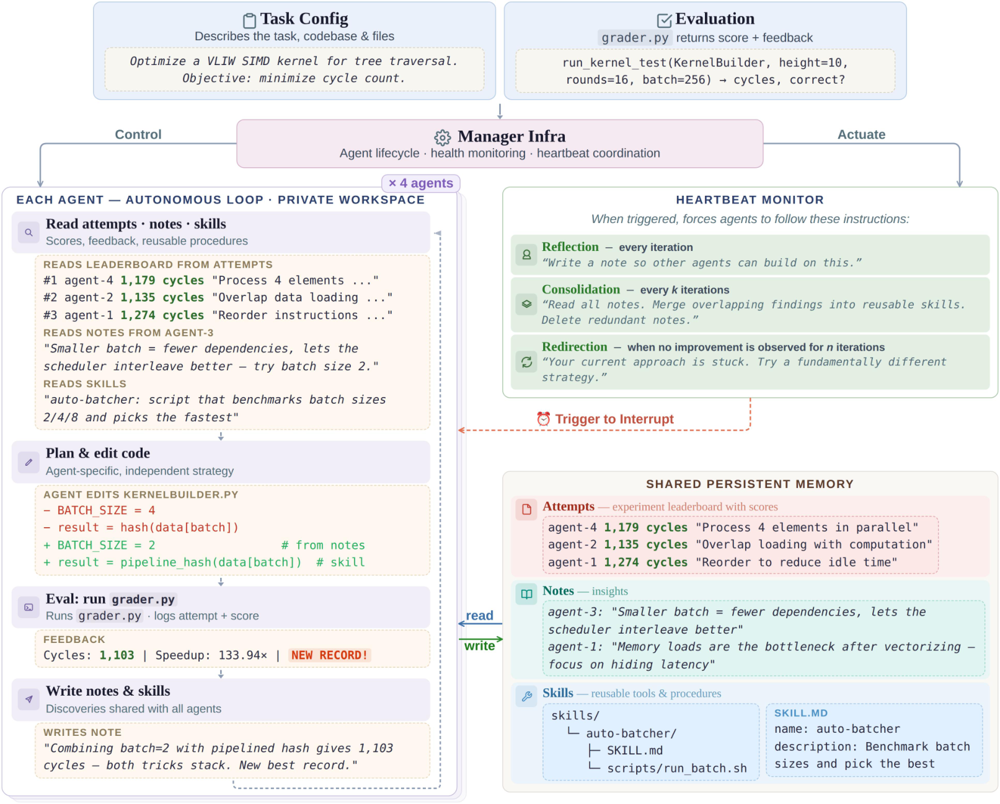
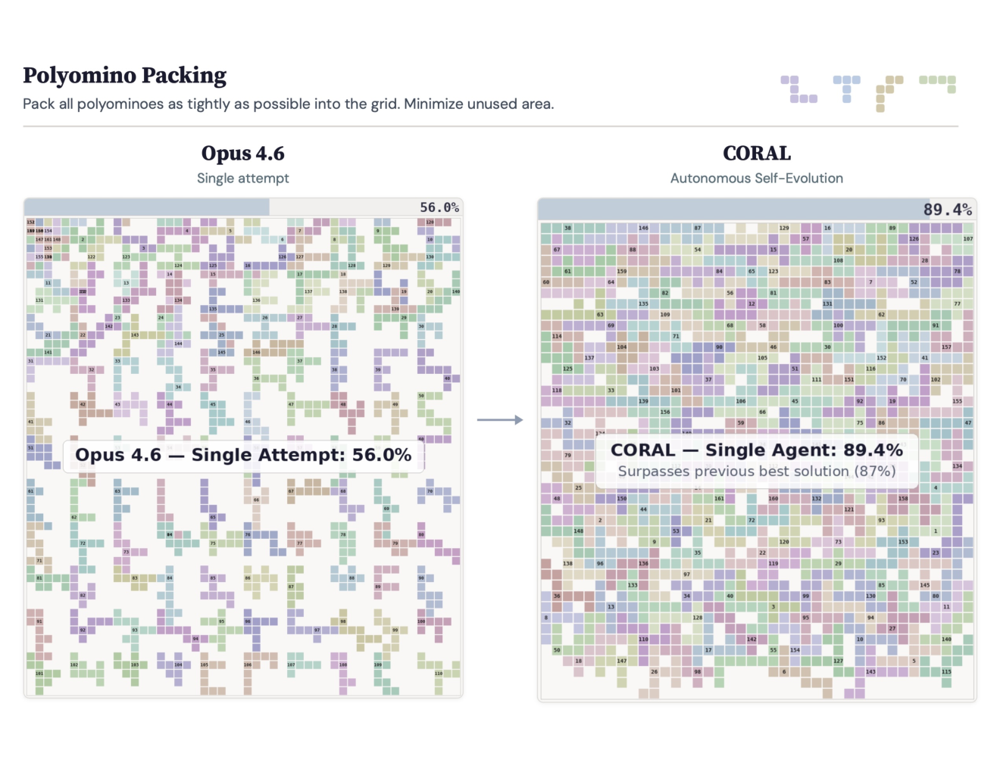

CORAL: Autonomous Multi-Agent Evolution for Open-Ended Discovery
Paper: arXiv 2604.01658 (v2, May 17 2026), by Ao Qu, Han Zheng, Zijian Zhou and 14 others, including Cathy Wu, Bryan Kian Hsiang Low, Jinhua Zhao and Paul Pu Liang. Accepted to COLM 2026 per the repo's news log — the arXiv listing has no comments field. Code at github.com/Human-Agent-Society/CORAL, Apache 2.0. Grounded in the full arXiv HTML (main text + Appendices A–E) and the repo README.
TL;DR
- CORAL deletes the evolutionary algorithm. Where FunSearch/AlphaEvolve-style systems fix Retrieve and Update as external heuristics (MAP-Elites, islands, bandit sampling) and let the LLM act only inside Propose, CORAL hands parent selection, local verification, when-to-submit and what-to-remember to long-running coding agents sharing a file system of
attempts/,notes/,skills/. - On 11 math and systems optimization tasks with Opus 4.6, single-agent CORAL takes the best final score on all 11 and new SOTA on 8, at 3–10× the improvement rate of fixed-search baselines. Four co-evolving agents then push Anthropic's kernel-engineering take-home from 1363 → 1103 cycles and Frontier-CS Polyominoes to 89.4% (previous best 87%) — hence the abstract's "SOTA on 10 tasks": 8 plus these 2.
- Two controls carry the argument, and the stronger one is not about multi-agency: disabling note and skill creation costs a single agent 1350 → 1601 cycles on kernel, while 4-agent co-evolution beats best-of-4 independent runs (1103 vs 1180 cycles; 84.2 vs 80.8 on Polyominoes) — though the co-evolved run logged ~596 evaluations against roughly 4×56 for the independent arm: wall-clock-matched, not evaluation-matched.
Why this matters
CORAL is the entry in this cluster where the evolving object is the harness itself, not by metaphor. What accumulates across a run is not a better program but a shared file system — attempts/, notes/, skills/ — plus the coordination structure deciding who reads it and when. Memory policy and coordination are harness components in every taxonomy in this tracker; CORAL's move is to stop writing them as code and hand them to the agents.
The frame to carry away is the four-stage decomposition: Retrieve → Propose → Evaluate → Update. FunSearch/AlphaEvolve-style search implements Retrieve and Update as human-written heuristics — MAP-Elites, islands, novelty bonuses — and calls the LLM only inside Propose. That division is a harness design, hand-authored and frozen. CORAL's thesis is that on open-ended problems those delegated decisions (what evidence to inspect, when to verify, what to remember) are part of the problem, so they belong inside the policy. It is the maximal version of the harness-optimization move: rather than searching over harness code, delete it and let a long-running agent improvise, leaving only a heartbeat scheduler and git isolation standing.
Two consequences. If it works, much of harness engineering is a context-management problem in disguise — which is what CORAL's own ablations say, the load-bearing one being shared knowledge rather than multi-agency. And the evolved harness becomes unauditable in a new way: a directory of markdown an agent wrote about itself, with no schema and no admission gate. Living-Harness is the opposite bet — same instinct, wrapped in commit gates.
The core idea
Formalize any evaluator-guided discovery loop as four stages: Retrieve a context from memory, Propose a candidate, Evaluate, Update memory. Fixed evolutionary search implements Retrieve and Update as human-written code — elite selection, island migration, novelty bonuses — and calls the LLM once inside Propose. CORAL's thesis is that on open-ended problems those delegated decisions (what evidence to inspect, when to verify, what to preserve) are part of the problem. Removing the scaffolding creates three failure modes it then engineers against — agents drift into micro-optimization, forget shared memory, corrupt each other's state — answered by the heartbeat, memory as a file system, and git-worktree isolation. Grader code, meanwhile, lives in .coral/private/eval/ and is unreadable by agents: they see scores, not logic.

Figure 2 from the paper: agents work in isolated worktrees and accumulate shared memory (attempts, notes, skills) through a hub; heartbeats drive consolidation and reorientation over long horizons.How it works
Formal skeleton. A task is a description \(x\) plus evaluator \(E\), with \(E(x,y):=(s,f)\) returning a score and auxiliary feedback (sub-score breakdowns or textual critique). With \(\mathcal{M}_t\) the shared memory at step \(t\), one improvement step is (reconstruction — §3.1 states this in prose; the paper has no display equations):
The entire contribution is who computes Retrieve and Update: external code in fixed search, the agent policy \(\pi\) in CORAL. Coordination across \(N\) agents is likewise a memory statement, not a protocol — agent \(i\) writes artifacts \(\mathcal{W}_{t}^{(i)}\) that agent \(j\) may later pull into its own context:
No messaging layer, no roles, no topology — "horizontal parallelism", against the vertical scaling of AI Scientist / AI Co-Scientist where a human fixes the decomposition up front.
Shared memory is literally a directory. .coral/public/ holds attempts/ (one JSON record per evaluation — score, commit hash, status, feedback — browsable and checkout-able), notes/ (free-form markdown in subdirectories the agent invents), and skills/ (reusable procedures in SKILL.md-plus-scripts form). Each worktree symlinks .claude/notes and .claude/skills into these roots, so memory is reachable through both the CLI and plain Bash. The choice worth stealing is progressive disclosure: memory is a library paged in on demand, not a blob prepended to every prompt.
Concurrency via git. Each agent gets its own worktree on its own branch, cut from a per-run clone; agents never run git themselves. The templated instruction file (CORAL.md) routes everything through coral eval -m "msg", one of 17 CLI commands, which stages, commits, grades against the private Grader behind a 300 s timeout, classifies the result (improved/regressed/crashed/timeout) and checkpoints memory.
Heartbeats replace the evolutionary algorithm's control flow. Three ship by default: reflect (every eval, local), consolidate (every 10 evals, global — reorganize notes, distill skills), pivot (plateau at 5 stalled evals, local — reassess and possibly abandon the direction). Triggers are (second expression copied from the paper's inline notation):
Delivery is the mechanically interesting part: the manager polls attempts/ every 5 s and, on a trigger, sends SIGINT — which the Claude Code runtime treats as a graceful session save — then resumes the agent with the latest evaluation result plus the rendered heartbeat prompt. The intervention enters a live trajectory rather than restarting it, so \(\mathcal{C}_{t}^{(i)}\rightarrow\mathcal{C}_{t}^{\prime(i)}\) keeps accumulated context. Agents may retune their own heartbeat config, except that reflect and consolidate are undeletable — a hard floor on knowledge externalization.
# CORAL: autonomous multi-agent evolution (reconstruction of Sec. 3.3 + App. C.5/C.6)
Given: task x, hidden grader E (.coral/private/), N agents, heartbeat config H
Init: per-run clone of repo; M <- {attempts/, notes/, skills/} under .coral/public/
for i in 1..N: git worktree agent-i; symlink notes/,skills/ -> M;
write CORAL.md; spawn runtime (max_turns=200)
Each agent i runs ASYNCHRONOUSLY in its own context C_i:
orient: coral log (leaderboard); coral show <hash>; read M/notes, M/skills
loop:
plan <- agent picks direction; may adopt another agent's commit as parent
edit <- modify files in own worktree (one idea per eval)
verify <- OPTIONAL local execution/tests # agent's choice, unscored
coral eval -m "msg":
git add -A; git commit
(s,f) <- E(candidate) in child process, hard timeout 300 s
status <- improved | baseline | regressed | crashed | timeout
append attempt JSON to M/attempts/; checkpoint M; eval_count += 1
write <- append notes / distil skills into M # visible to all agents
Manager loop (poll every 5 s):
update per-agent best score and evals_since_improvement
if count mod every == 0 or evals_since_improvement >= every:
SIGINT agent (session save) -> resume with (eval result + heartbeat prompt)
# reflect(1, local) | consolidate(10, global) | pivot(plateau 5, local)
if agent process died: restart with latest eval results
Stop: 3 h wall-clock (standard suites) | no improvement in 100 evals or 2 h (stress)
Results
Setup. Six math tasks (circle packing, signal processing, Erdős minimum overlap, two MMD variants, third-order autocorrelation) and five systems tasks (EPLB, PRISM, LLM-SQL, transaction scheduling, Cloudcast), following the EvoX / TTT-Discover protocols. Baselines — OpenEvolve, ShinkaEvolve, EvoX — get the same Opus 4.6, seeds, evaluators and 3-hour clock; CORAL gets the minimum duration among baseline runs, four trials each.
Single-agent (Table 1). Best final score on all 11, new SOTA on 8. Signal processing 0.8229 vs SOTA 0.7429 is the largest relative jump; transaction scheduling 4566 vs 4348 (EvoX 3984); Cloudcast 618.4 vs 632.7. On PRISM everything ties at 26.26, but CORAL arrives in 3 evaluations against 16–32.
The efficiency columns carry the argument. Improvement rate — the fraction of evaluations raising the best score — hits 100.0% on circle packing (11 evals) and PRISM (3), 83.3% on MMD-16-2 (6), 78.9% on EPLB (19), against best-baseline figures of 27.1%, 31.6%, 33.3% and 12.6%.
Multi-agent (Table 2). Kernel Engineering (a VLIW SIMD tree-traversal task from Anthropic's performance take-home, official best 1363) goes 1350 with one agent to 1103 with four — 18.3% — in 596 attempts versus 56. Polyominoes, hardest of 172 Frontier-CS problems, goes 80.2 → 84.2 without web search (67 attempts) and 89.4% with it, above the 87% prior best; a single-attempt Opus 4.6 baseline scores 56.0%. Note the improvement-rate column falls with more agents (43.0% → 9.0% on kernel): more agents buy diversity, not per-eval precision. An open-source stack (MiniMax M2.5 + OpenCode) is weaker absolutely but reproduces the 1→4 gain nearly everywhere.

Figure 3 from the paper: single-attempt baseline (left, 56.0%) versus 4-agent CORAL with web search (right, 89.4%), above the previous best of 87%.Ablations (Table 3). Disabling note and skill creation costs a single agent 1350 → 1601 cycles on kernel (18.6%), 80.2 → 77.3 on Polyominoes, 4566 → 4444 on transaction scheduling: knowledge artifacts are causal, not just correlated with good runs. Against best-of-4 independent runs, co-evolution wins on all three (1103/1180; 84.2/80.8; 4694/4629).
Mechanistic analysis is worth reading twice. Local verification: agents run code before submitting on 57% of kernel attempts and 61% on transaction scheduling; PRISM sits at 0% because its grader uses hidden randomized tests. Knowledge scales with difficulty: 0.05 artifacts per attempt on standard tasks versus 0.55 (Polyominoes) and 0.68 (kernel), and attempts that read memory improve 55% of the time on kernel versus 26% on standard tasks. Standard-task notes are parameter-change logs; kernel notes record architectural bottlenecks (VALU dependencies; cases where relaxing WAR dependencies hurts), and Polyominoes agents keep a "what NEVER worked" folder. Cross-agent transfer: on kernel 36% of attempts build on another agent's commit and those improve at 17% versus 9% overall, with 66% of records descending from a cross-agent parent. All four kernel agents independently reach 1103.
How it connects
- Darwin Gödel Machine — the cluster's hub and the right first comparison: same archive-plus-validation instinct, different unit of selection. DGM evolves one repo along a lineage under an explicit archive policy; CORAL evolves interacting agents over a shared store with no archive policy at all, and Appendix A concedes that population is homogeneous.
- What else "the harness" can be. DarwinX evolves harness code under a preserve-and-extend contract; RHI evolves a prompt-level spec of the agent loop; Living-Harness evolves memory plus a state graph behind commit gates — the closest analogue to
notes/andskills/, and the one showing what CORAL leaves on the table, since ablating its Evolution-SOP while keeping the containers costs 9.7 points. EvoHarness-RL asks what CORAL answers by fiat: when is touching harness state worth a turn? - Meta-Harness — the tightest methodological pairing: both give a coding agent unrestricted filesystem access to prior attempts, navigated with
grep, and Meta-Harness ablates that access as the ingredient (50.0 vs 34.6 median).skills/is a harness artifact evolved in-band with solutions, and nothing separates how much of the 1103 comes from better skills versus better kernel code. Harness Handbook supplies the structure free-form notes lack. - Rethinking Harness Evolution — the standing skeptic, half-disarmed: with no held-out split, "edits memorize fixes rather than distilling strategies" cannot bite. The budget charge survives, and its repeated-sampling control is exactly the arm CORAL never runs. Harness Generalization's verdict that harness choice behaves like a hyperparameter cautions against reading an 11-task sweep as a universal ranking.
- Evolving Benchmarks / Environment Generator Dynamics — the frontier CORAL declines. Appendix A: evaluators are often "incomplete, or even fundamentally ambiguous… evaluation may also need to co-evolve with the solutions." That is the door SAGA walks through.
- Siblings. AdaExplore / AdaEvolve / ASI-Evolve / Darwinian Evolver each unfreeze a different piece of the AlphaEvolve skeleton: AdaEvolve learns a better Retrieve, CORAL deletes it, Darwinian Evolver freezes the harness and evolves the artifact. Frontis-MA1 / AIDE² place CORAL on Weco's ladder: a mechanism demo with a concrete artifact but no cost-per-discovery accounting.
Critical take
The load-bearing result is shared knowledge, not multi-agency. Table 3's knowledge ablation is the paper's only causal claim, and it lands on a single agent: without notes and skills, kernel engineering degrades 1350 → 1601 cycles. The 1→4 gain is real but smaller in kind (1103 vs 1180 against best-of-4), and §4.4.2 shows it is mediated by that same store — a third of kernel attempts build on another agent's commit, and attempts that read memory improve at roughly twice the base rate. So an evolvable shared memory carries most of the weight, with "multi-agent" mainly the mechanism keeping it stocked. For harness optimization that is the more useful finding: a memory hierarchy is far cheaper to adopt than a four-agent orchestration layer.
"# Evals" is not a budget metric, and the efficiency story leans on it. Appendix E.2 gives $30–60 per 3-hour single-agent run, 3–4× for four agents, max_turns=200 — and no cost figures for baselines. Wall clock is matched; token spend is not, since an agent that reasons, edits and locally tests before each submission burns far more inference per hour than OpenEvolve's single-forward-pass mutations. §E.2 concedes CORAL makes fewer grader calls precisely because each step involves more reasoning, so those improvement-rate columns measure grader parsimony rather than compute efficiency. The same flaw reaches the cleanest positive result: the co-evolved kernel run logged ~596 evaluations against roughly 4 × 56 for the best-of-4 arm (per-run Bo4 counts are never stated; inferred from Table 2 — verify against released logs), making 1103-vs-1180 plausibly ~2.7× over-resourced against its own control. And no plain repeated-sampling arm exists anywhere — \(K\) independent attempts at equal token cost, best-of-\(K\) by grader — the control that beat harness evolution in every Terminal-Bench configuration in Rethinking Harness Evolution. Nor is the grader the only channel: agents also get unlimited free local execution, compiling and profiling off the record on well over half of kernel and transaction-scheduling attempts (§4.4.1), where baselines see only grader returns.
Claims that do not line up. The abstract reports SOTA on 8 of 11 tasks at a 2.5× improvement rate; the introduction says 10 tasks — those 8 plus the two stress tests — at 3–10×, which §4.2 repeats — while the honest span against the strongest baseline task by task is 1.3× (Erdős) to 8.9× (LLM-SQL), median near 3×. §4.2 also has baselines converging in "60–100" evaluations, contradicted by EvoX's own 16, 18 and 36 in the same tables.
Other reservations. Polyominoes' 89.4% is the web-search-enabled run, a contamination surface the paper never probes. The mechanistic analyses are correlational by construction — "attempts that read knowledge improve more often" is the selection effect you would expect if agents consult memory when they already have a plan — and only the knowledge ablation is causal, at n=3 tasks. The release is this batch's best, but the math/systems suite follows the external SkyDiscover protocol and the kernel grader is Anthropic's take-home, so reproducing Table 1 means assembling three sources.
If you remember three things
- CORAL's real claim is substitution: agent autonomy over Retrieve/Update, backed by filesystem memory and a SIGINT-delivered heartbeat, replaces the hand-written evolutionary algorithm — and it beats OpenEvolve, ShinkaEvolve and EvoX on every final score across 11 tasks while touching the grader far less often.
- The results that carry weight are the knowledge ablation (1350 → 1601 cycles without notes and skills) and co-evolution over best-of-4 independent runs (1103 vs 1180) — though the co-evolved run appears to have spent ~2.7× its control's evaluations, and only the first is causal.
- The harness-optimization lesson is about what to evolve: memory structure and coordination, not code alone. A memory hierarchy plus a heartbeat is a far cheaper adoption than a four-agent orchestration layer, and CORAL's own ablations say it carries most of the weight. The caveat is that the paper cannot tell you the price — matched wall clock with unreported tokens plus unmetered local execution is not a matched budget, and no repeated-sampling control exists anywhere in it.